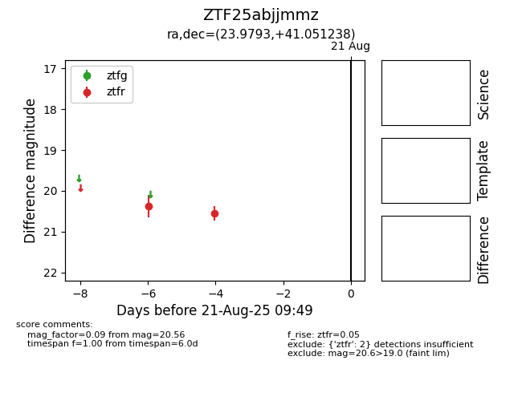

Target ZTF25abjjmmz at 2025-08-21 09:49, see:
FINK: fink-portal.org/ZTF25abjjmmz
Lasair: lasair-ztf.lsst.ac.uk/objects/ZTF25abjjmmz
ALeRCE: alerce.online/object/ZTF25abjjmmz
alt names
ZTF25abjjmmz (ztf,alerce)
coordinates:
equatorial (ra, dec) = (23.9793,+41.05124)
galactic (l, b) = (131.8972,-21.04492)
photometry
last ztfr=20.56
2 ztfr detections
